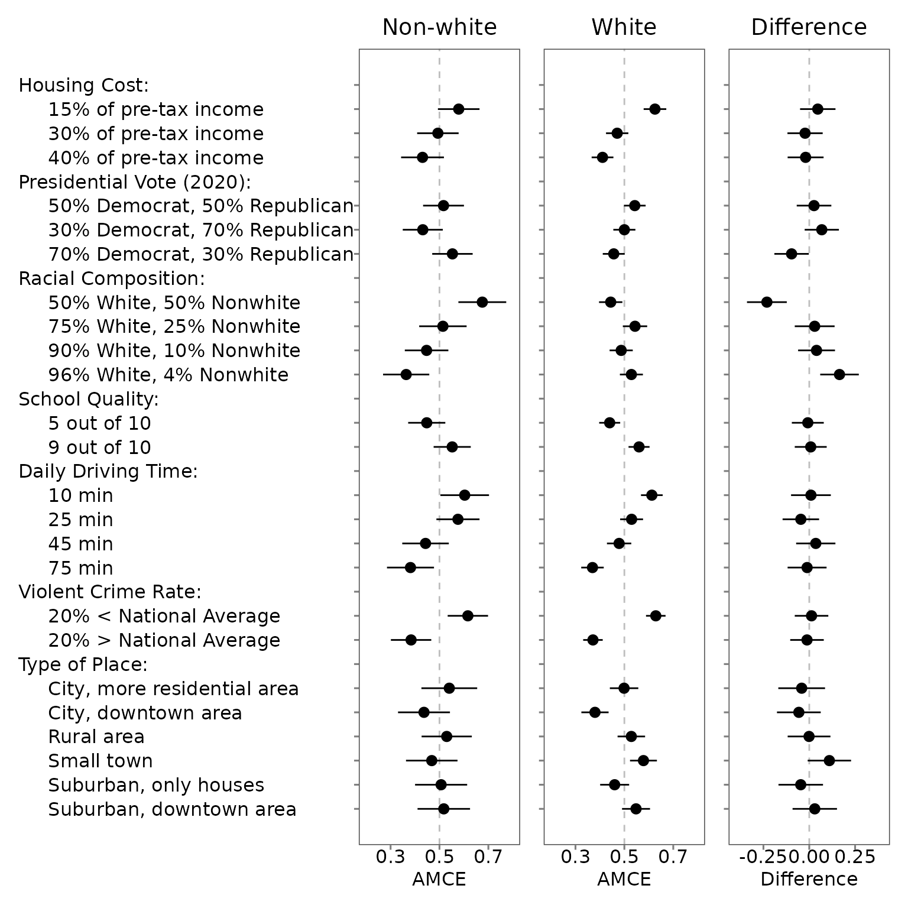

06. Compare MMs or AMCEs between the subgroups
06-compare.RmdA key quantity of interest in conjoint tasks is whether estimates (MMs or AMCEs) differ across sub-populations. These subgroup comparisons are especially susceptible to IRR-induced measurement error bias. In the following, we present some sample codes so that researchers and adopt-and-modify them flexibly.
6.2 Profile-level analysis
Read and Wrangle data
To begin, define the outcome questions in the original dataset.
outcomes <- paste0("choice", seq(from = 1, to = 8, by = 1))
outcomes <- c(outcomes, "choice1_repeated_flipped")Let’s make three data frames – the first data frame for the baseline
group (in this example, respondents who did not report their race as
“white”); he second data frame for the comparison group (in this
example, respondents who reported their race as “white”), and the third
data frame for both groups. Note that the .covariates
argument should be specified in the reshape_conjoint()
function for the third group.
# Pre-processing
df <- exampleData1 %>%
mutate(white = ifelse(race == "White", 1, 0))
df_0 <- df %>%
filter(white == 0) %>%
reshape_projoint(.idvar = "ResponseId",
.outcomes = outcomes,
.outcomes_ids = c("A", "B"),
.alphabet = "K",
.repeated = TRUE,
.flipped = TRUE)
df_1 <- df %>%
filter(white == 1) %>%
reshape_projoint(.idvar = "ResponseId",
.outcomes = outcomes,
.outcomes_ids = c("A", "B"),
.alphabet = "K",
.repeated = TRUE,
.flipped = TRUE)
df_d <- df %>%
reshape_projoint(.idvar = "ResponseId",
.outcomes = outcomes,
.outcomes_ids = c("A", "B"),
.alphabet = "K",
.repeated = TRUE,
.flipped = TRUE,
.covariates = "white") Then, add and re-order the labels (see 2.3 Arrange the order and labels of attributes and levels).
df_0 <- read_labels(df_0, "temp/labels_arranged.csv")
df_1 <- read_labels(df_1, "temp/labels_arranged.csv")
df_d <- read_labels(df_d, "temp/labels_arranged.csv")Estimate MMs or AMCEs and the difference in the estimates
For each of the three data frames, estimate the MMs, AMCEs, or the differences in these estimates. The following example estimate profile-level marginal means (default).
Importantly, if your conjoint design includes the repeated task, the
projoint() function applied to each subgroup will estimate
IRR for the corresponding subgroup. The output of out_d
includes the data for these differences
out_d@estimates## # A tibble: 48 × 11
## estimand att_level_choose estimate_1 se_1 tau estimate_0 se_0 estimate
## <chr> <chr> <dbl> <dbl> <dbl> <dbl> <dbl> <dbl>
## 1 mm_uncor… att1:level1 0.586 0.0157 0.158 0.545 0.0258 0.0401
## 2 mm_corre… att1:level1 0.625 0.0236 0.158 0.579 0.0433 0.0464
## 3 mm_uncor… att1:level2 0.480 0.0158 0.158 0.496 0.0250 -0.0163
## 4 mm_corre… att1:level2 0.471 0.0233 0.158 0.494 0.0432 -0.0229
## 5 mm_uncor… att1:level3 0.439 0.0153 0.158 0.460 0.0254 -0.0210
## 6 mm_corre… att1:level3 0.411 0.0227 0.158 0.431 0.0446 -0.0200
## 7 mm_uncor… att2:level1 0.529 0.0154 0.158 0.510 0.0245 0.0195
## 8 mm_corre… att2:level1 0.543 0.0226 0.158 0.517 0.0425 0.0260
## 9 mm_uncor… att2:level2 0.500 0.0157 0.158 0.461 0.0248 0.0394
## 10 mm_corre… att2:level2 0.500 0.0230 0.158 0.432 0.0417 0.0683
## # ℹ 38 more rows
## # ℹ 3 more variables: se <dbl>, conf.low <dbl>, conf.high <dbl>You can also check tau for each subgroup:
out_d@tau## tau1 tau0
## 1 0.1582662 0.2113249Then, make and save three ggplot objects.
Visualize subgroup differences
Then, make a plot using the patchwork package.
Researchers can add/modify layers of each ggplot. The default horizontal
axis label is “Difference” if .by_var = TRUE is specified
in the plot() function.
g_0 <- plot_0 +
coord_cartesian(xlim = c(0.2, 0.8)) +
scale_x_continuous(breaks = c(0.3, 0.5, 0.7)) +
theme(plot.title = element_text(hjust = 0.5)) +
labs(title = "Non-white",
x = "AMCE")
g_1 <- plot_1 +
coord_cartesian(xlim = c(0.2, 0.8)) +
scale_x_continuous(breaks = c(0.3, 0.5, 0.7)) +
theme(axis.text.y = element_blank(),
plot.title = element_text(hjust = 0.5)) +
labs(title = "White",
x = "AMCE")
g_d <- plot_d +
coord_cartesian(xlim = c(-0.4, 0.4)) +
scale_x_continuous(breaks = c(-0.25, 0, 0.25)) +
theme(axis.text.y = element_blank(),
plot.title = element_text(hjust = 0.5)) +
labs(title = "Difference")
library(patchwork)
g_0 + g_1 + g_d 